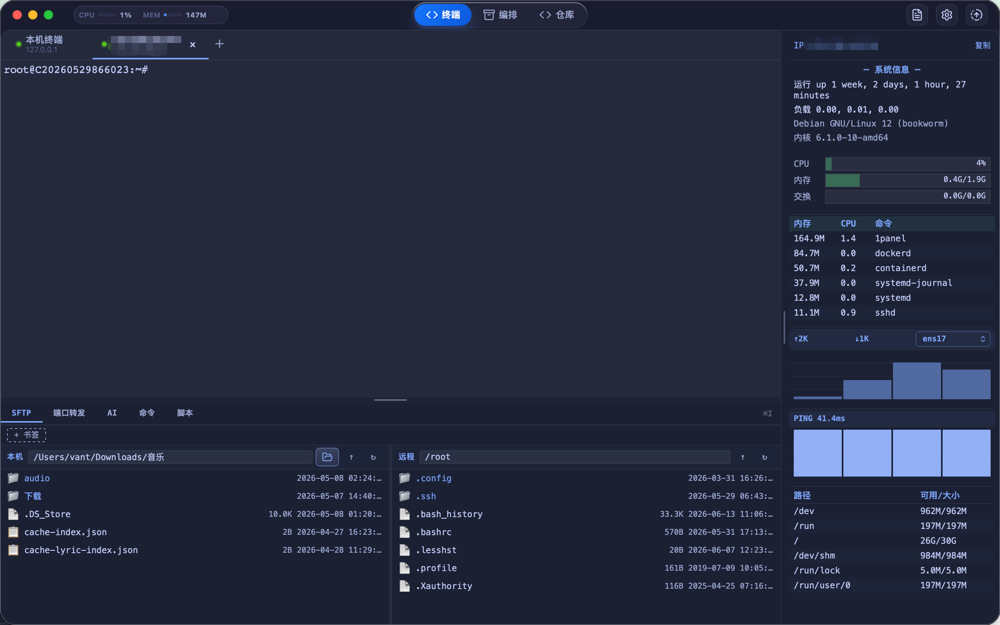
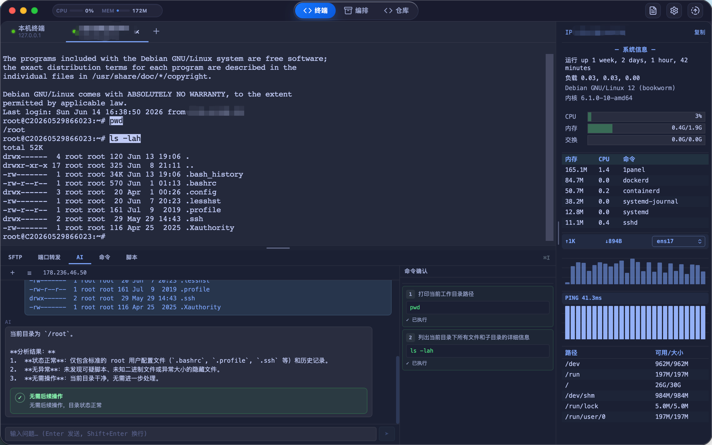
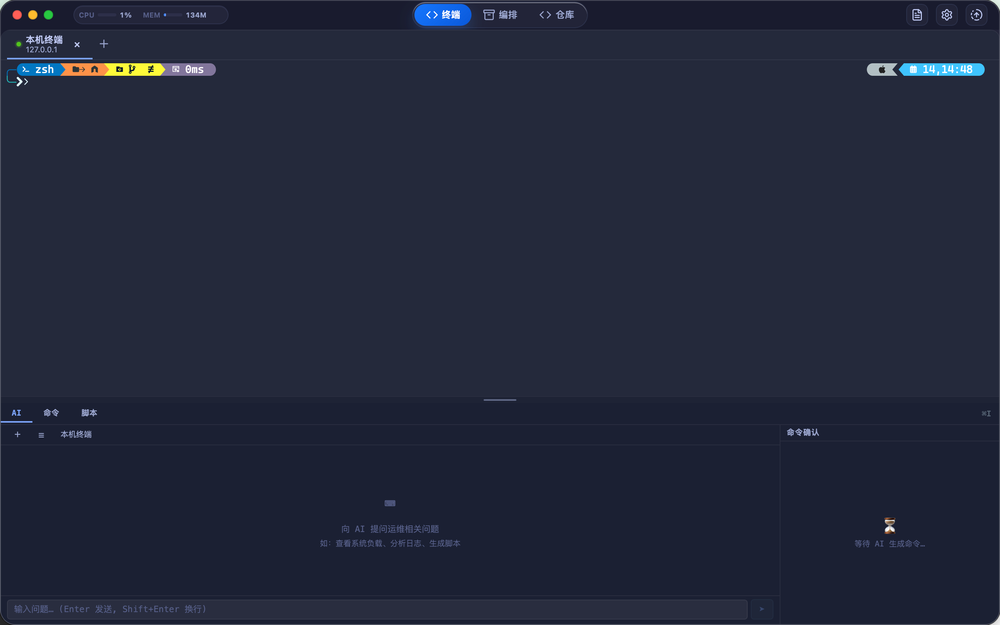
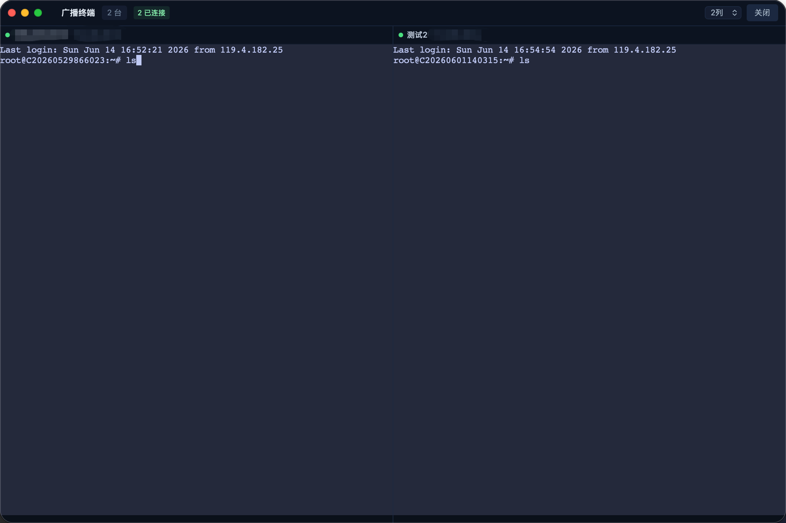
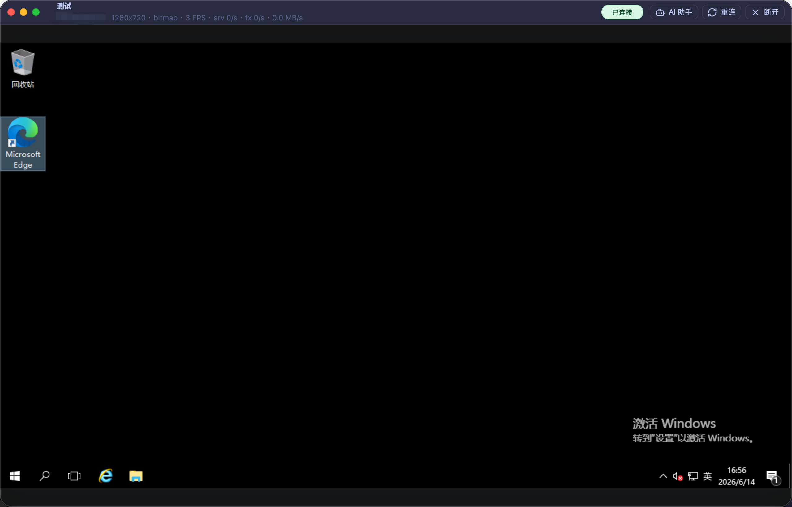
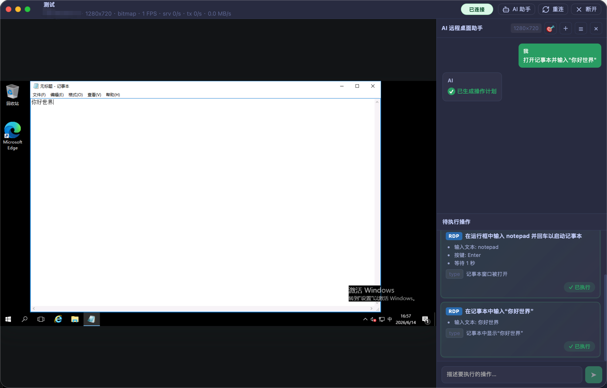

开源免费 · 本地优先 · 跨平台
本地优先运维工作区
面向运维工程师、SRE 与平台团队的桌面客户端。SSH 终端、SFTP 文件传输、RDP/VNC 远程桌面、批量命令、自动化工作流与 AI 辅助，数据优先留在本机，无需部署中心服务。
v0.1.7
当前版本
3
跨平台系统
100%
本地数据
面向运维工程师、SRE 与平台团队的桌面客户端。SSH 终端、SFTP 文件传输、RDP/VNC 远程桌面、批量命令、自动化工作流与 AI 辅助，数据优先留在本机，无需部署中心服务。







资产信息、连接入口、主机上下文集中呈现。
SSH 客户端、文件传输、远程桌面、批量脚本、知识库散落在多个工具中。OpsBatch 把它们装进一个桌面应用。
"SSH / SFTP / RDP 各用各的软件，来回切窗口"
"批量操作靠手动 for 循环，没有历史回放"
"命令脚本散落 wiki，找不到也复用不了"
从资产管理到远程桌面，从批量执行到工作流编排，覆盖日常运维高频场景。
嵌套分组、资产搜索、批量选择；解析 ~/.ssh/config 与 ProxyJump 跳板链路；阿里云 / AWS / 腾讯云实例拉取。
本地终端 + 远程 SSH 多标签页，基于 Rust SSH 实现（russh）；主机监控：CPU、内存、磁盘、网络、进程快照。
本地 / 远程双栏浏览，上传、下载、预览、重命名、删除、书签；传输队列与解压支持；从 SFTP 打开文件编辑后保存回远端。
Windows RDP 独立窗口连接，H.264 直显 / bitmap 双路径；VNC 经 noVNC + WebSocket bridge，支持共享连接与只读模式。
多主机并发执行：并发数、超时、实时结果、失败重试；危险命令防护；广播终端最多 16 台主机；支持 {host} 变量批量上传。
终端上下文 AI 问答与建议、危险命令风险说明、脚本生成与错误诊断；支持 OpenAI、Ollama 与自定义 OpenAI-compatible 端点。
基于 React Flow 的拖拽式工作流编辑器。将日常运维流程沉淀为可复用、可审计的自动化工作流。
从资产分组中勾选目标主机，支持嵌套分组与搜索。
拖拽命令、脚本、传输、条件分支、人工确认、回滚等节点。
实时查看每步执行结果，支持结果变量传递与失败重试。
保存为模板，一键应用到其他主机分组与定时任务。
前端 React 19 + TypeScript / Vite，后端 Rust / Tauri v2。核心数据持久化在本机 SQLite，无需云服务即可运行。
OpsBatch 是本地优先的桌面应用，不依赖中心服务。主机资产、凭据、执行历史和工作流主要保存在本地 SQLite 和系统 keychain 中。
AI 功能需用户自行配置端点和 API Key，终端上下文仅在用户主动发起时提交。AI 建议仅供参考，用户确认后执行。
自动识别当前设备，并从 GitHub Releases 读取最新版本与安装包地址。
正在读取最新安装包列表...